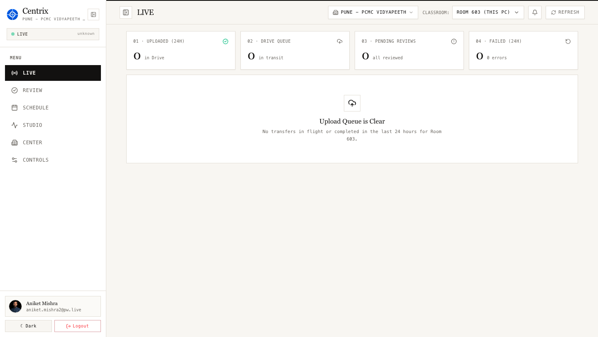

Automated background engine that detects classroom OBS recordings, matches timetable schedules with zero human error, and syncs directly to Google Drive & YouTube.
Real-time interfaces operating across PhysicsWallah Vidyapeeth centers.

Active room telemetry (Room 603 - Pune PCMC Vidyapeeth) with 24-hour upload throughput status cards.
Eliminating operational bottlenecks across classroom recordings.
Replaces 2–3 daily hours of manual file renaming and uploading per center.
Algorithmic timetable matching guarantees lectures land in the exact batch folder.
Chunked Google Drive uploads resume from the exact byte on network interruption.
Lectures are available to students shortly after class ends instead of next morning.
A modern, resilient tech stack operating 24/7 on center hardware.
Native Windows worker service with FileSystemWatcher. Automatically starts on boot, consuming less than 1% CPU.
Offline-first architecture. If center internet drops for days, all lecture state remains safe in local queue and auto-syncs on reconnection.
Chunked resumable uploads with SHA-256 deduplication to ensure zero wasted bandwidth and automatic resume on Wi-Fi dropouts.